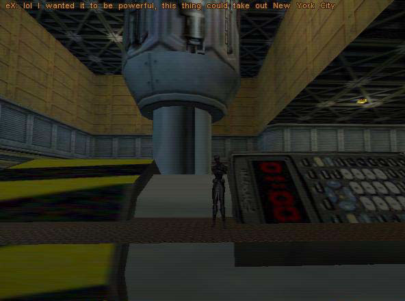
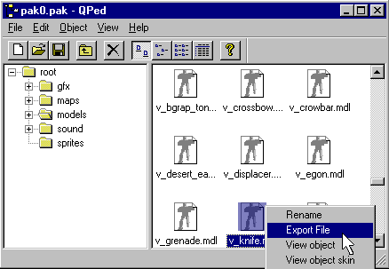
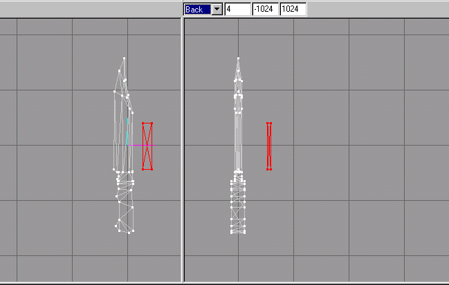

|
|
Good work! Maybe some big game company is start to take notice of our work! I can see the paychecks now! *Ahem* ..., well seriously folks, take a look at Figure 1.45 to see what we should have at this point.

Figure 1.45 Completed handle with knife blade unhidden
The final thing we need to do is to make it so that we can view it ingame as a world model. But we will first have to check its size and position to be correct for ingame use. Chances are that it will be of monstrous dimensions. The first world model of a Pipe bomb I made was big as a house, and the team laughed so hard when we went into a DM MP game with it in the map that it took weeks of therapy to calm us down! One of the comments about it is shown in Figure 1.46

Figure 1.46 Disaster strikes in the hearts of Swarm players!
Before we compare the what size we need, first we have to save our file. For us to compare its size to a human or another weapon is that you should open up a v_weapon.mdl file and make a box to fit around the weapon. Then you should delete all the groups and the joints or bones in it so that just your box remains. (See Figures 1.47 and 1.48).

Figure 1.47 Exporting the op4 v_knife.mdl

Figure 1.48 Creating a box to use as a guide
We will next delete all the joints by going to the "Joint" rollout and selecting the first bone in the list as shown in figure 1.49, then deleting it by using the "Delete" key on the keyboard.

Figure 1.49 Selecting the main joint of the biped for deletion
You will next switch to the "Groups" rollout and select and delete one by one all the "groups," except of course the "box" group that you just created. Next go to the "Materials" rollout and delete all the materials, as we do not want any unwanted references to materials that are not used in our knife file. Then you will save this in the directory that you created your knife. You should name it something like "Box-Scale.ms3d," so as to remind you what this file is.
At this point you will open the "knife2(ref).ms3d." You need to merge the box into this file now. Select "File->Merge..." on the menu selections, and choose the "Box-Scale.ms3d" file. You may find it hard to find this new item, if you do not first zoom out in all viewports before the merge. You might want to rotate this box so that it will be easier to scale the knife to about the same size. In Figure 1.50 you can see that my knife creation was a bit to large, and will need to be scaled down. Refer back to the reference on how to scale and do this now. Here is a tip to help: set the scales of the "X," "Y," and "Z" axis to .9 in the scale text boxes and keep clicking the "Scale" button in the "Scale Options" section until the desired size is achieved.

Figure 1.50 Checking the scale of the knife model to a know size
|
|